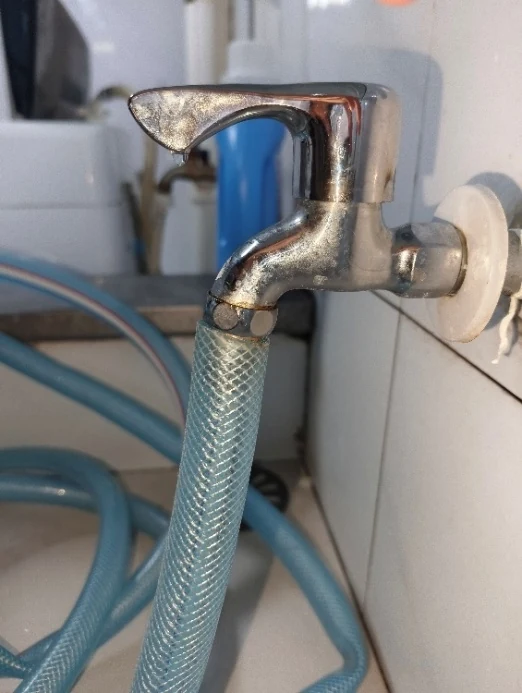
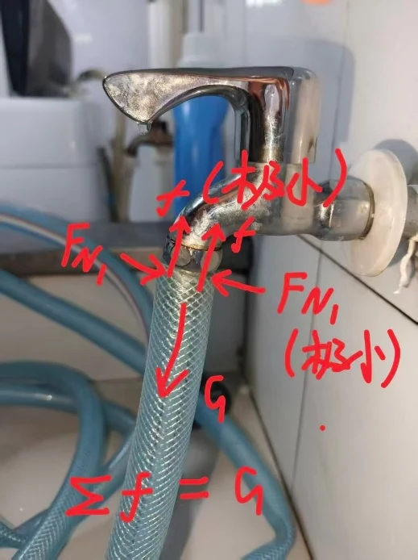
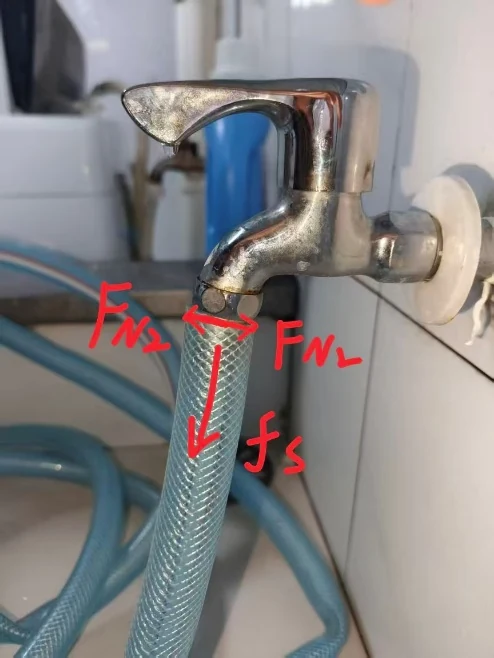
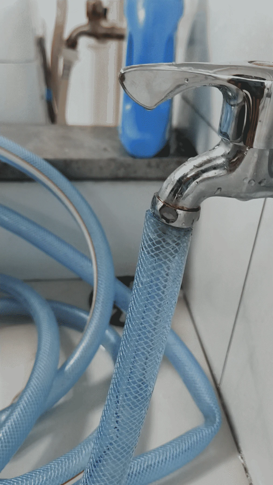
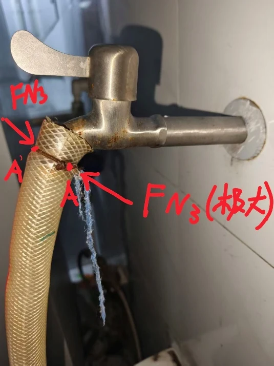
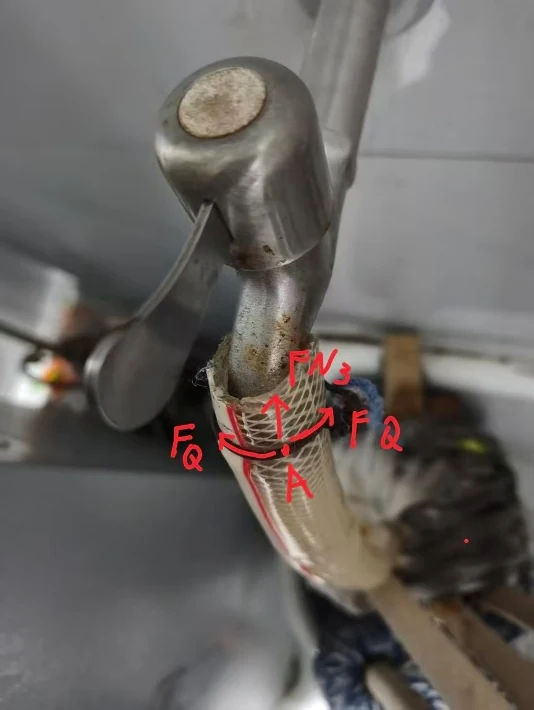
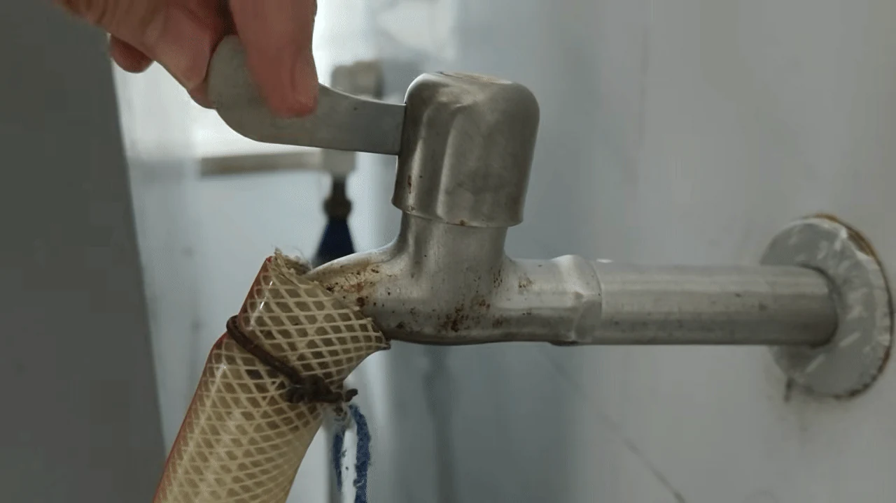
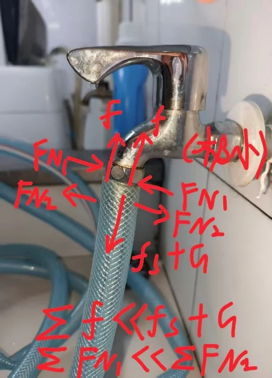
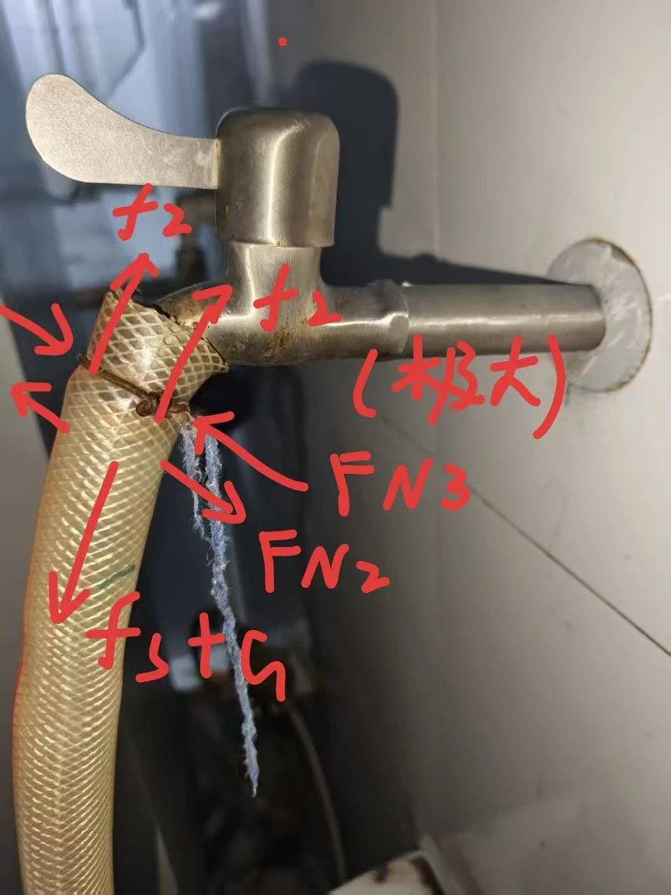

大连交通大学 · 智能建造23
我的原作钢丝捆扎的智慧：一个生活细节中的预应力概念演示
晋卓凡
智能交建23 晋卓凡
引言
在日常生活中，我们常常需要解决一些简单的连接与密封问题，例如将一根软水管牢固地连接到水龙头上，确保其在通水时不漏水、不脱落。一种有效且常见的解决方法便是使用钢丝进行捆扎。这一看似简单的动作，其背后蕴含了与现代工程中“预应力”技术完全相通的深刻原理。本文将通过对比演示，揭示这一生活技巧中的结构力学智慧。
概念
预应力的核心思想是：在结构承受外部荷载之前，预先对其施加一个有益的、内部的力，从而显著改善其在使用状态下的性能。 在工程上，这通常意味着通过张拉高强度钢筋（或钢绞线）使混凝土预先受压，以抵抗未来荷载引起的拉应力。而在我们的场景中，钢丝扮演了“钢筋”的角色，其对水管产生的箍紧力则相当于“预应力”，软水管与水龙头的连接处则构成了需要被增强的“结构体”。
模型一：无捆扎的水管连接（基准模型）
这是最简单的连接状态，仅将软水管直接套在水龙头的出水口上。这种连接方式完全依赖水管材料与水龙头表面之间的摩擦力(f)以及水管自身微弱的弹性抱紧力（FN1）来维持密封，f与FN1常常极小，一般仅能平衡水管自重（G）。为分析方便本文中所有受力分析仅在包含水龙头直径平行于镜头的平面中进行。


当打开水龙头时，水流压力（外部荷载）会产生两个主要作用：第一，水压会使水管径向膨胀，试图撑大其直径（FN2），这会立即破坏原有的微弱密封；第二，水压会施加一个将水管从水龙头上冲走的轴向推力(fS)。其结果通常是接口处严重漏水甚至水管脱落，如下图所示。


水流对水管的作用力分析 水流轻易冲开水管
这个模型清晰地展示了在外部荷载下，一个无预应力的、松散的连接是如何失效的。
模型二：钢丝捆扎后的预应力连接
现在，我们引入关键措施——用钢丝紧密地捆扎水管与水龙头的连接处。当用钳子拧紧钢丝时，我们实际上完成了一个关键的工程操作：主动施加预应力。
1. 预应力的产生：拧紧钢丝，使其产生拉伸变形，钢丝内部因此建立了很高的拉应力（FQ）。
2. 力的传递：被张紧的钢丝会紧紧箍住内部的软水管，软水管又将这个压力传递到水龙头的外壁上(FN3)。此时，在通水之前，连接处已经处于一个稳定的高压应力状态（FN3极大）。
下图为钢丝捆扎下，水管局部受力分析。
钢丝捆扎对管上A点作用力 钢丝对水管的 “预应力”


在钢丝捆扎下，随意调节水龙头水流大小，水管都不会被冲开。

效果对比与原理分析
那么，这个预先施加的力（预应力）是如何起作用的呢？让我们再次打开水龙头。
当水压到来时，同样会产生径向的撑开力和轴向的推力。然而，钢丝提供的巨大预箍紧力（环向预压力）预先已经将水管紧密地压缩在龙头上。这个预压力有效地抵消了水压试图产生的撑开力，从而维持了密封面的紧密接触。同时，这个预压力也产生了巨大的摩擦力（f2），直接抵抗了水流的轴向推力，防止水管脱落。
下面的示意图清晰地展示了两种状态的力学差异：
左图无预应力：荷载（水压）直接导致结构失效（漏水/脱落）。
右图有预应力：预加的压应力与荷载产生的拉应力相互抵消，结构保持稳定。


这与预应力混凝土的原理完全一致：利用高强度材料（钢丝/钢筋）的张力，使脆性或柔性材料（水管连接处/混凝土）预先受压，从而克服其弱点，提升整体结构的性能。
结论
通过以上对比演示，我们可以得出明确的结论：使用钢丝捆扎水管这一简单的日常行为，成功地运用了预应力技术的基本原理。
1. 主动施力：在承受水压（荷载）之前，通过拧紧钢丝主动施加了预应力。
2. 效果显著：这个预加的箍紧力极大地改善了连接的密封性和抗脱落能力，将一個不可靠的连接转变为稳固可靠的系统。
3. 原理普适：其“预则立”的核心思想——通过预先引入有益的內力来抵抗未来的有害外力——与大型工程中的预应力技术一脉相承。
因此，这个小细节不仅是生活经验的体现，更是一个存在于我们身边的、生动的结构概念课堂。它证明了工程智慧并非遥不可及，而是深深植根于解决实际问题的需求之中。


这是一份便于网页阅读的原作视图，保留提交内容的文字、图片和基本顺序；公开页面不显示学号。